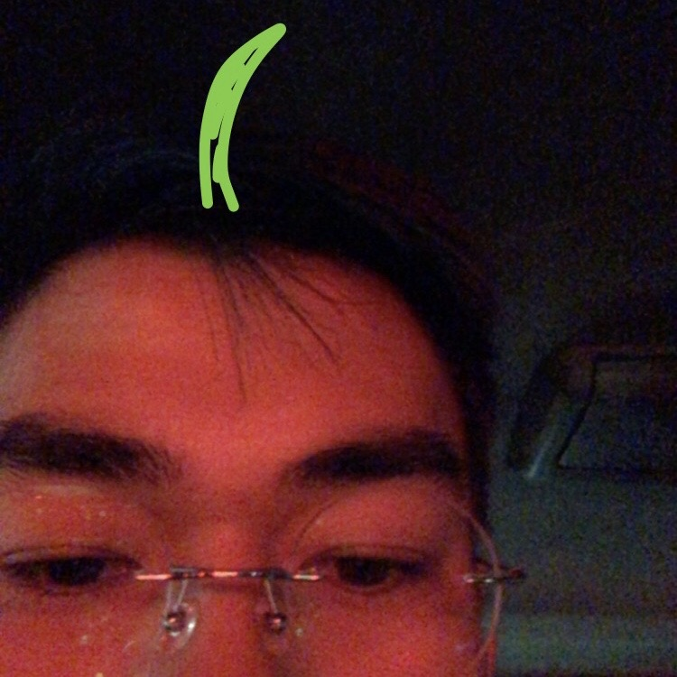
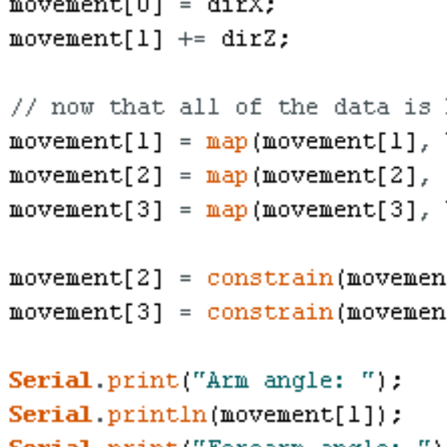
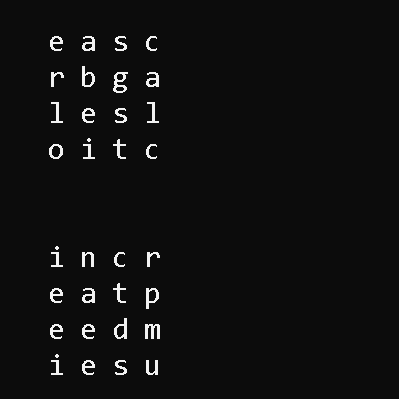

My name is John Ian So, and I'm a first year EECS major at UC Berkeley with interests in computer vision, robotics, and machine learning. I'm a firm believer that people should put their talents and time towards helping other; i have a strong interest in the intersection between technology and social good, such as assistive designs, app development, and STEM education.
My technical background is primarily rooted in competitive robotics and backend development, with some experience in app development and front end design. I was a member of Team 5327, Gael Force Robotics, for four years in high school, where I worked with a team to design lightweight, effective robots to compete. Robotics has made me familar with the wide range of disciplines it encapsulates, such as structual design, closed loop control, and sensor fusion. For the 2017-2018 VRC game In the Zone, I captained 5327B to the World Championships (which you can learn more about, along with my other projects, below!).
Outside of competitive robotics, I also have software and electrical engineering experience through educational and professional opportunities. Through internships and PLTW curriculum such as Digital Electronics and AP Computer Science A, I've worked with a variety of tools including motion capture, computer vision, app/web development, CAD, and PCB design. I'm currently using these skills on the EECS team of Berkeley Formula Electric (formerly Berkeley Hyperloop) to ideate designs for the Formula SAE EV division.

I modelled a human arm, 3D printed it, and controlled it using PhaseSpace's signature motion capture software, an Arduino-powered Espressif-32 microcontroller.
more
I modelled the systems behind a self-driving car, such as acceleration curves and route planning, using the Duckietown environment, sklearn, and TensorFlow.
more
I'm creating a solver for one of my favorite games, Word Hunt! I'll be using Python and OpenCV to scan in the boards, generate words, and play the game in real time.
moreincoming :)
(link to resume here)
University of Califonia, Berkeley | Spring 2023
B.S. Electrical Engineering and Computer Science, College of Engineering | GPA: 4.00
HTML/CSS, Python, Java, C, Arduino, NI Multisim, Git, Android Studio, Autodesk Fusion 360, Autodesk EAGLE, OpenCV, TensorFlow, sklearn
Systems & Controls, Berkeley Hyperloop | Berkeley, CA
September 2019 – January 2020
Lead Intern, PhaseSpace Motion Capture | San Leandro, CA
June 2018 - August 2018
Vice President, Gael Force Robotics, Dublin High School | Dublin, CA
August 2018 – May 2019
VEX Robotics 5327B Team Captain, Gael Force Robotics, Dublin High School | Dublin, CA
August 2017 – May 2018
johnianrso@berkeley.edu | (925) 336-7553 | 2016-2020